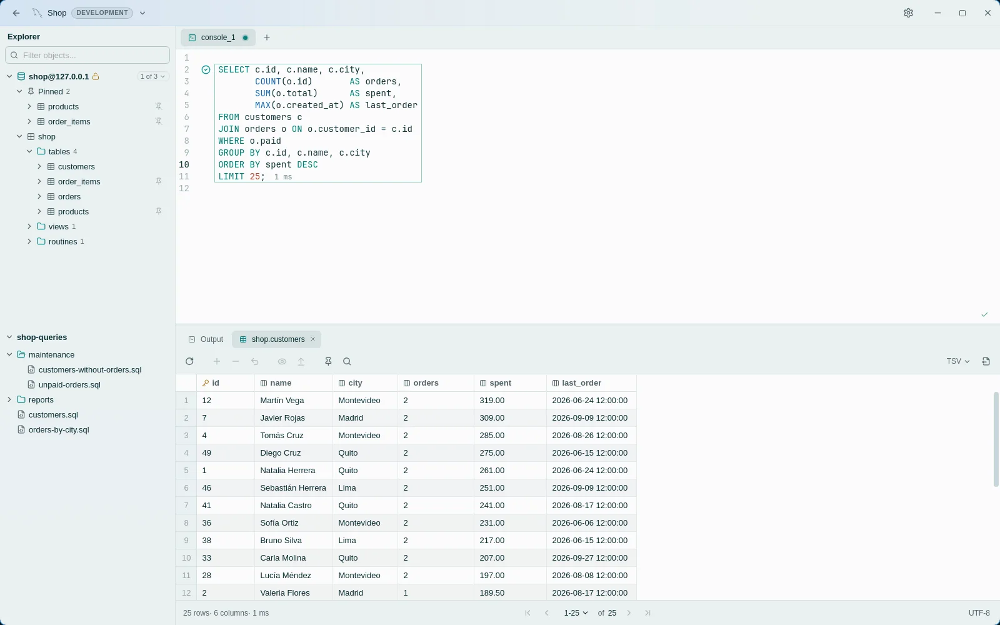
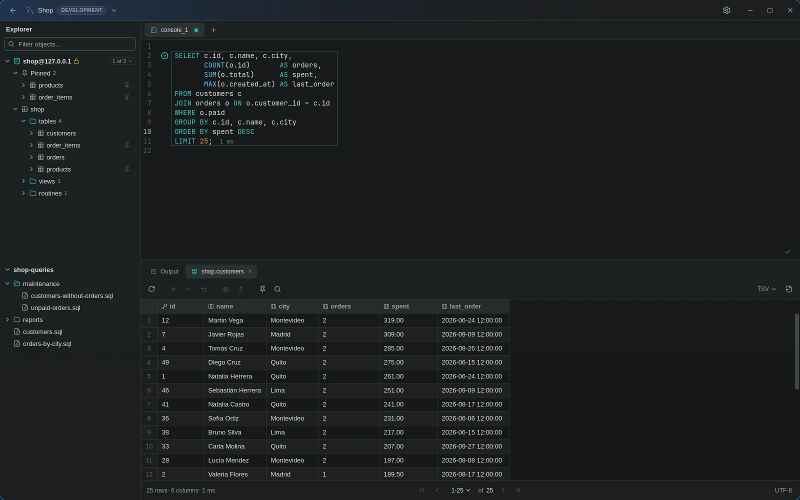
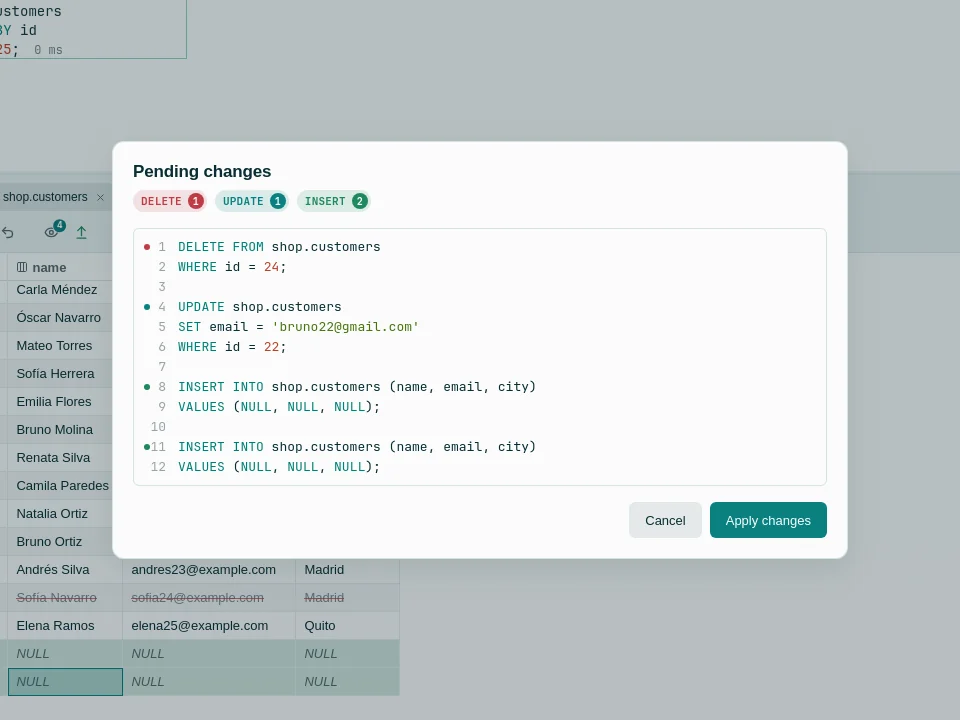
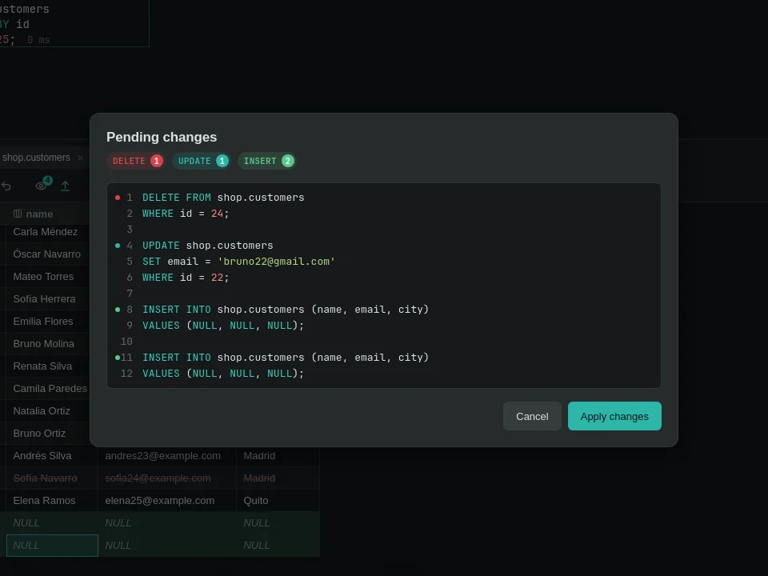
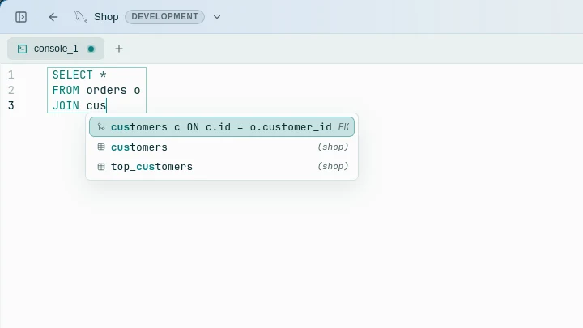
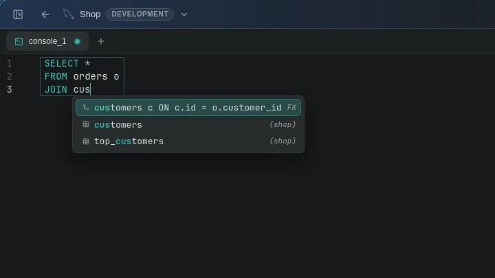
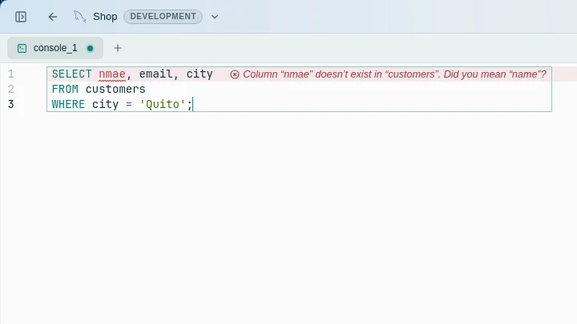
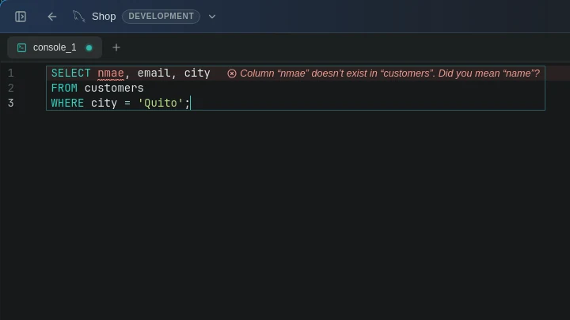
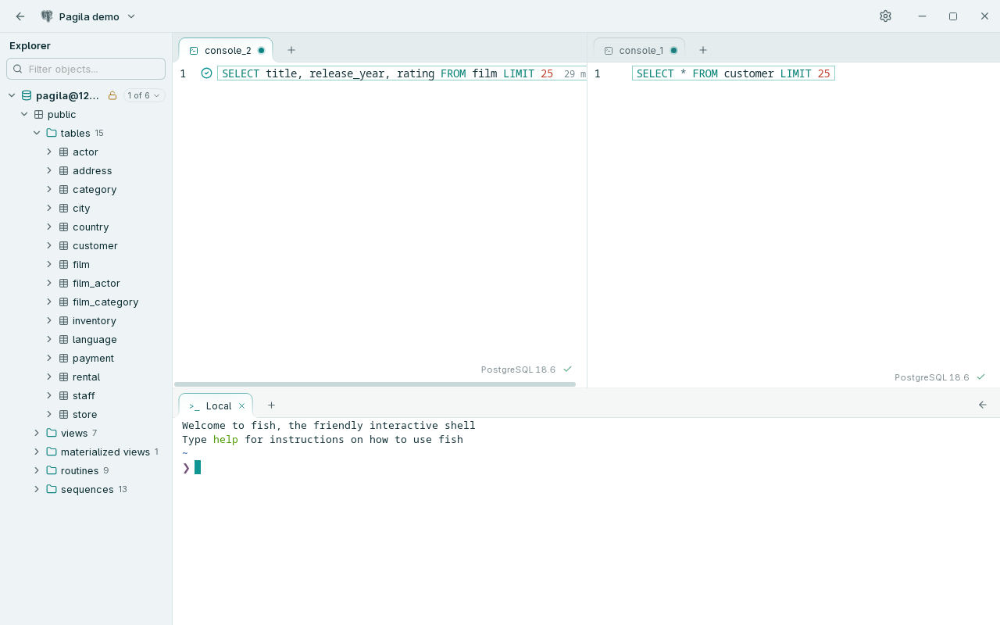
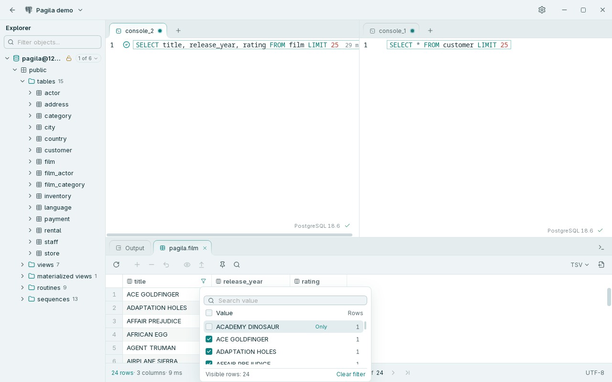

PostgreSQL
Probado en el repositorio con versiones de la 13 a la 18.
Escribe consultas, inspecciona datos y edita resultados. Rowly DB convierte los cambios pendientes en SQL para que los revises antes de aplicarlos.


Aplicación real · Conexión PostgreSQL · Temas claro y oscuro
Edita celdas, añade filas o marca registros para eliminarlos. Rowly DB prepara las sentencias y espera tu confirmación.


El autocompletado usa tablas, columnas y claves foráneas de la base activa. Los diagnósticos señalan nombres desconocidos antes de ejecutar.




La versión 0.4.2 añade espacios divididos y sesiones de terminal persistentes. Los filtros consultan la base y permanecen en su pestaña.


Captura real de v0.4.2 · Base de demostración Pagila · Tema claro
Un cliente de escritorio centrado en el trabajo habitual con bases relacionales. El código y la versión publicada confirman estos motores y plataformas.
Probado en el repositorio con versiones de la 13 a la 18.
Probado con MySQL 8.0, 8.4 y 9.7.
Un perfil separado con comportamiento propio para su dialecto SQL.
Instaladores para Windows, DMG para macOS y AppImage, DEB, RPM y Arch para Linux.
Elige el instalador para tu sistema. Las notas y sumas de comprobación permanecen en GitHub.
Cuatro conversaciones para ideas, mejoras, errores y preguntas. Cada área tiene una página permanente y un hilo respaldado por GitHub.